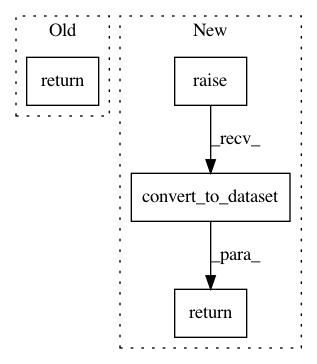

e87e84a21e0dfc1258b2f868532b03fabfd66a85,autokeras/adapters/input_adapter.py,TimeseriesInputAdapter,convert_to_dataset,#TimeseriesInputAdapter#Any#,256
Before Change
for window in x:
final_data.append([elems.numpy() for elems in window])
final_data = tf.data.Dataset.from_tensor_slices(final_data)
return final_data
After Change
for window in x:
final_data.append([elems.numpy() for elems in window])
final_data = tf.data.Dataset.from_tensor_slices(final_data)
return super().convert_to_dataset(final_data)
In pattern: SUPERPATTERN
Frequency: 6
Non-data size: 4
Instances
Project Name: jhfjhfj1/autokeras
Commit Name: e87e84a21e0dfc1258b2f868532b03fabfd66a85
Time: 2020-06-01
Author: jhfjhfj1@gmail.com
File Name: autokeras/adapters/input_adapter.py
Class Name: TimeseriesInputAdapter
Method Name: convert_to_dataset
Project Name: jhfjhfj1/autokeras
Commit Name: e87e84a21e0dfc1258b2f868532b03fabfd66a85
Time: 2020-06-01
Author: jhfjhfj1@gmail.com
File Name: autokeras/adapters/input_adapter.py
Class Name: TextInputAdapter
Method Name: convert_to_dataset
Project Name: jhfjhfj1/autokeras
Commit Name: e87e84a21e0dfc1258b2f868532b03fabfd66a85
Time: 2020-06-01
Author: jhfjhfj1@gmail.com
File Name: autokeras/adapters/input_adapter.py
Class Name: StructuredDataInputAdapter
Method Name: convert_to_dataset